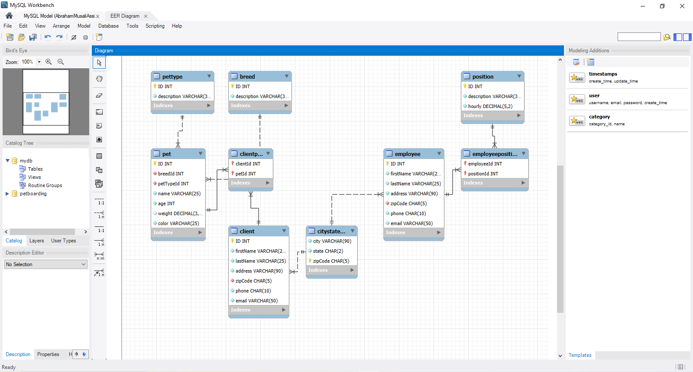

Project Description
This project is a MySQL database management system designed for a pet boarding business. It allows the business to efficiently manage pet information, owner details, boarding schedules, and services offered.
Features
- Store and manage pet information including name, breed, age, and medical history.
- Maintain owner details such as contact information and address.
- Schedule boarding appointments and track availability.
- Record services provided during the boarding period.
- Generate reports on pet boarding history and owner activity.
Technologies Used
- MySQL for database management
- SQL queries for data manipulation and retrieval
- ER diagrams for database design
Challenges and Solutions
One of the main challenges was designing a normalized database schema that minimizes redundancy while ensuring data integrity. This was addressed by carefully planning the relationships between entities and using foreign keys to enforce referential integrity.
Skills Learned
- Database design and normalization techniques
- Writing complex SQL queries for data manipulation
- Understanding of relational database management systems (RDBMS)
- Problem-solving skills in database management
- Personal Note: This showed how simple MySQL is to utilize, but also how necessary patience is a virtue when using this program.
Conclusion
This MySQL PetBoarding project provides a comprehensive solution for managing a pet boarding business's data needs. It enhances operational efficiency and improves customer service by ensuring accurate and accessible information.